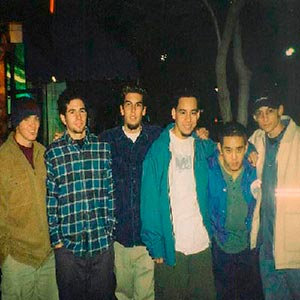
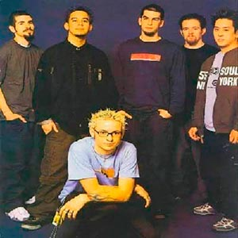

Linkin Park es una banda estadounidense de rock procedente de LAX, EE.UU. Formada en 1996, el grupo estuvo inicialmente integrado por Mike Shinoda, Dave Farrell, Joe Hahn, Brad Delson, Rob Bourdon y Mark Wakefield, este último como voz principal. La banda inició en ese mismo año sus primeros trabajos musicales de manera independiente y posterior a esto grabaron su primer material llamado Xero; sin embargo, no tuvieron gran éxito en la búsqueda de un sello discográfico ya que ninguno mostró interés en su trabajo, lo que ocasionó la renuncia de Mark Wakefield. Poco después, Chester Bennington se incorporó a la banda como vocalista; el grupo realizó su primera presentación en un club de L.A y siendo respaldados por Jeff Blue, en aquel entonces vicepresidente de Warner Bros. Records, lograron firmar con el sello en 1999. El nombre del grupo es un juego de palabras haciendo referencia al Lincoln Park en Santa Mónica.
HISTORIA
Los primeros años de la banda se remontan a un pequeño estudio del vocalista Mike Shinoda, donde él y su compañero de la escuela Agoura High School, Brad Delson, grabaron el primer material en 1995. Ambos asistieron al mismo instituto y conocieron a Rob Bourdon, quien actualmente es el baterista de la banda. Más adelante, cuando tomaron la banda más en serio, Shinoda contactó con Joe Hahn mientras estudiaba en el Art Center College de Pasadena. Por su parte, Delson compartía apartamento con el bajista David Farrell, quien decidió dejar el grupo debido a sus compromisos con otra banda. Farrell regresó un año más tarde. En ese momento, Mark Wakefield se unió a la banda en 1996.
Para 1997, la banda contaba con seis integrantes y decidieron llamarse "SuperXero," que posteriormente se redujo a "Xero." Grabaron varias canciones en el estudio de Shinoda, que era una alcoba, con el fin de conseguir un contrato con una discográfica. A pesar de que las compilaciones de "Xero Sampler Tape" se hicieron con recursos limitados, la banda no pudo conseguir un contrato y el proyecto no prosperó. La desilusión dentro de la banda fue tan grande que Mark Wakefield decidió abandonar el grupo.
Wakefield era el vocalista de Xero, por lo que su salida llevó a la banda a buscar un nuevo cantante.Mike Shinoda publicó un anuncio en un periódico buscando un nuevo vocalista, y Chester Bennington se interesó en dicho anuncio.
Tras la incorporación de Bennington en 1999, la banda se llamó "Hybrid Theory". A partir de ese momento, la banda se enfocó en crear nuevo material y trabajó con un sello discográfico independiente. Sin embargo, surgieron problemas al registrar el nombre de la banda, ya que había otro grupo con el nombre "Hybrid". La banda tuvo que cambiar su nombre nuevamente. Después de varios intentos, Bennington propuso que la banda se llamara "Lincoln Park," en homenaje al Lincoln Park de Santa Monica, donde solía pasar cuando regresaba de los estudios. Desde entonces, la banda se llamó "Linkin Park," nombre que mantienen hasta el día de hoy.


MIEMBROS DESTACADOS
EX MIEMBROS
SU PRIMER ALBUM
El primer álbum de Linkin Park llamado Hybrid Theory fue lanzado el 24 de Octubre de 2000. Este disco le costó a Linkin Park medio año de trabajo. Su productor fue Don Gilmore. El disco tuvo un buen recibimiento por fanáticos. El grupo vendió más de 4,8 millones de copias sólo durante su año debut. El álbum está compuesto en mayoría por temas líricos que tratan los problemas que afectaron a Bennington durante su adolescencia, incluso el abuso de drogas y alcohol, el abuso infantil y el divorcio entre padres.
El disco fue #2 en el U.S. Billboard 200 y ha alcanzado posiciones muy buenas e importantes en el resto del mundo. La banda ha vendido alrededor de 24 millones de copias en todo el mundo, y de esos, 10 millones de copias se han vendido sólo en EE.UU, haciéndole el álbum de mejor venta en el siglo XXI.
La banda lanzó una edición especial de su disco Hybrid Theory el 11 de marzo de 2002. Fue galardonado con un Grammy en 2002, a la mejor interpretación de hard rock por la canción Crawling. Igualmente fue nominado a otros dos premios Grammy por mejor artista nuevo y mejor álbum de rock. Además el disco se mantuvo en el RIAA's Top 100 Álbumes, por otro lado la revista Billboard lo ubicó en el puesto número once en la lista de los 100 álbumes más grandes de la década.
TEMAS EN SUS CANCIONES
Linkin Park se ha destacado por abordar una amplia gama de temas en sus canciones, que van desde lo personal hasta lo social. Sus primeros álbumes, "Hybrid Theory" y "Meteora," se centran en conflictos en las relaciones, desórdenes internos y problemas personales.
En su álbum "Minutes to Midnight", la banda adopta un tono más oscuro y aborda cuestiones políticas, como la guerra en Irak y el huracán Katrina. El video de "What I've Done" incluye imágenes de figuras históricas y aborda temas como guerras, motines, pruebas de destrucción nuclear, medio ambiente y hambruna.
El disco "A Thousand Suns" se enfoca en temas relacionados con la guerra nuclear y mezcla ideas humanas con tecnología. El nombre del álbum es una referencia a la explosión de una bomba atómica. A pesar de abordar temas intensos, el grupo se caracteriza por tener pocas letras con insultos, aunque algunos de sus álbumes han llevado la etiqueta de "Parental Advisory" debido a palabras consideradas inadecuadas. En resumen, la música de Linkin Park explora una amplia variedad de temas, desde lo personal hasta lo político y social, y su estilo lírico es distintivo por su enfoque en la introspección y la conciencia social.